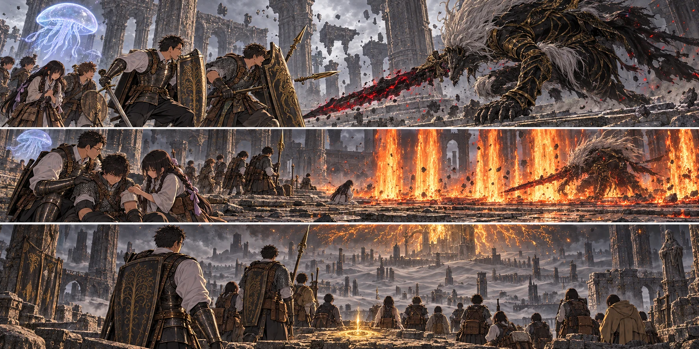

DAY91 / TURN1−101
交代するために、ここにいる。

翼「先生もですよ」
【DAY91｜暁、リュシア】赤い雨は止んだ。軒から落ちる最後の水滴を見ていた結衣が、ふと顔を上げた。教会の壁際に光が立っている。像でも、祝福でもない。その中に、久しぶりに女神リュシアがいた。
先生だけではなかった。濡れた布を絞っていた者も、食料を数えていた者も、その声を聞いた。「百日目の終わり。約束した期限は変わりません」。誰かが、まだ十日ある、と小さく呟いた。先生は机へ戻り、九十九日までに書き込んだ予定を開いた。
「最後の日は、取り残した子がいた時のために残したい。だから攻略に使うつもりの時間は、今日から九日だ」。リュシアは期限を縮めなかった。延ばしもしなかった。勝てなければこの世界での挑戦を終え、次の世界へ進むという選択が残る。それは、この世界で出会った人まで救い出せるという約束ではなかった。
「メリナには、もう会えないんですか」。紬の声で、教会が静かになった。リュシアはすぐには答えなかった。「あなたたちの帰還と、この世界に生きる者の結末は、同じ契約ではありません」。慰めの形にして、別の答えを渡すことはしなかった。
先生の手が紙の端を押さえた。誰も死なせないと考えていた。颯を一度失い、戻ってきても傷は残った。メリナは、自分で進んだ。進ませたのは自分でもあった。「せめて、帰すと約束した人は全員帰す」。言った後で、せめてという言葉が嫌になった。三十三人は、何かを諦めた残りではない。
翼がその紙を自分の側へ少し引いた。「じゃあ、塔は俺たちで」。先生はゴドリックの大ルーンを包んだ布を見た。今日は、まだ渡さない。橋までを見て、通れるか報告してもらう。「戻る所までが仕事だ」。翼は頷いた。「先生もですよ」。女神の光が消えた後、その言葉だけが教会に残った。
【それぞれの出発】主力十三人は二十六食分を携え、登録している大橋の脇へ飛んだ。第三隊六人は、自分たちも到達している城の奥まった小部屋へ。そこから神授塔側への道を歩いて調べる。教会の十四人からは六人が近場の狩りへ出た。全員が、同じ戦場へ行く必要はなかった。
大橋に、昨日まで道を塞いでいた騎士はいない。その先の霧は残っている。先生は健太、陽太の順に目を見た。「低下を受けてからだけじゃ遅い。息が詰まる前に、呼ぶ」。二人とも頷いた。先生は自分の盾を軽く叩き、霧へ足を入れた。
【獣の司祭｜2d6＝3・3＋4＝10】石が飛んだ。先生は盾を斜めに当てて身体をずらし、後ろへ大きく逃げずに獣の横を取った。司祭の指が床を掻く。続く爪の走る線へ、生徒たちは固まらなかった。花と千夏は互いの射線を見て、弦を放す間隔をずらす。
大地の黄金のハルバードから、短い誓いの光が先生と直人へ渡った。クララが側面に浮かぶ。彼女へ敵の目が向く一瞬も、ずっと安全でいられる時間ではない。直人が大竜爪を振り下ろし、陸が引き際を埋めた。届いたら、離れる。前回と同じ武器で、前回より一つ早く手を引いた。
紬は祈祷の手を上げなかった。葵も、まだ大きな祝福を使わなかった。傷がないから使わずに済むのは、我慢して傷を隠すこととは違う。皆の呼吸と足を見て、二人は後半へ力を残した。
【黒き剣｜2d6＝4・5＋5＝14】獣の覆いが裂け、黒と金の身体が露わになる。「また来たか。死を知り、それでも手を伸ばすか」。地に刻まれた赤黒い光の向こうで、マリケスが剣を持ち上げた。先生にはその問いが、自分だけへ向けられたものに聞こえなかった。
高く跳ぶ。赤い刃が空から走る。先生は一つを潜り、次を横へ外した。三つ目の後を追いかけたくなる足を止める。剣が地へ着く位置、その先の転がれる場所を見た。「健太！」。槍先がマリケスの脇をかすめる。巨体の顔が向き直ったことを確認して、先生は一度、息を吐いた。
健太は大盾で全部を受けようとはしなかった。盾を身体の前に残しながら、足で次の線を外す。先生が一歩後ろへ下がった分、陽太は前へ出ず、三人目の余白に留まった。二人が同時に疲れ切れば、交代という言葉だけになる。昨夜の三歩が、そのことを教えていた。
葵の祈りが、近くへ戻った六人に届く。黄金樹の恵み。瞬間に傷を消すためではなく、この先の攻防の中で少しずつ身体を支える光だった。マリケスが再び飛ぶ時には皆が散り、光だけがそれぞれの身体に残った。
地面へ剣が突き立つ。赤黒い渦から前衛が抜ける。「空いた！」。紬は逃げる仲間の背へ火を重ねず、全員が離れた場所へ走った。息を吸い、屈む。火柱が巨体の着地した床から立ち上がった。全てが当たったわけではない。跳ね返る影を追わず、紬もそこを離れた。
【終盤｜2d6＝1・2＋5＝8】それでも、一度で終わらなかった。火の向こうから来た剣の柄が、直人の肩を打った。大竜爪の重さに引かれ、膝が床へ落ちる。先生が刃の向く側へ出た。健太は直人を引く方へ回り、陽太が追撃の線を断つために槍を突き出した。
「立てる？」。葵の問いに、直人は赤瓶を飲んでから答えた。「立てる。振るのは、少し待って」。今度はそう言えた。葵は残していた一度の治療を使う。ここで誰かが気を利かせて新しい大技を出す必要はない。立て直している間の空白を、残る者が埋めればよかった。
先生はマリケスを追って跳ばなかった。着地したところへ一撃を入れ、剣が戻る前に横へ抜ける。陽太が狙いを引き、健太が退路を空けた。花の矢、千夏の矢。その間に悠の三つの輝石が回り、陸の剣が傷を広げた。直人が戻れた時、振り下ろす場所は、もう皆が作っていた。
【進捗2＋2＋1＝5｜撃破】大竜爪が落ちる音の後、黒き剣の動きが止まった。先生の腕も、しばらく盾を下ろせなかった。誰もすぐには喜ばない。身体を数える。声を返す。十三人の返事が、崩れた石の間に揃った。そこでようやく、陽太が膝に手をついた。
マリケスの身体から光が解けた。守られていた死が、世界へ戻っていく。先生は、その意味の全部を見届ける時間を与えられなかった。黄金樹を包む火の色が変わる。地面と空の距離が揺れ、隣の顔を確かめる間に、風景そのものが消えた。
【灰の王都】足が沈んだ。雪ではない。白灰色の粉が、靴と膝と、倒れた屋根を覆っている。以前通った街路は埋まり、屋根の上だった場所を歩けてしまう。火は、ただ木を照らしていたのではなかった。先生は振り返り、言葉を飲んだ。教会の二十人をここへ連れてこなくてよかった。
主力十三人は、灰の王都の祝福へ一人ずつ到達して登録した。休息し、直人の肩も回復する。ここへ来ていない者の転送先にはならない。以前の王都市街の祝福は、以前の街があったという記録と、今使える場所とを分けて書き直した。
【同じ日、別の道｜第三隊11・教会狩猟13】翼たちは橋の先に、動かない石に見えて動く巨人を見た。大きな弓もある。倒す数を数える前に、隠れられる柱と戻る道を記した。今日は渡らない。城の登録済み祝福まで足で戻り、それから教会へ帰る。大ルーンはまだ眠ったままだ。
亮たちの狩りは鹿三頭。三十六食分を持ち帰り、食卓をつないだ。誰かが戦場で勝った日の夕方にも、肉を分け、汲んだ水を処理する手が要る。遠くの十三人が持った食料も、元をたどればこの手から出ていた。
【夕方】マリケスの二万二千ルーンと黒き剣の追憶を記録する。追憶はまだ交換しない。財布は三万千百七十ルーン、矢四百四十二本。食料は全体で五十九食分、そのうち十三食分が遠征隊の手元にある。先生は灰を払った紙へ、翌日の欄を作った。残る道を、歩ける形で確かめなければならない。
今回の判定記録
| 判定 | 出目 | 補正 | 合計 |
|---|
| clergyman | 3+3 | 4 | 10 |
| blackBlade | 4+5 | 5 | 14 |
| finish | 1+2 | 5 | 8 |
| cRecon | 4+3 | 4 | 11 |
| base | 3+6 | 4 | 13 |
抽選前の条件 · 抽選結果